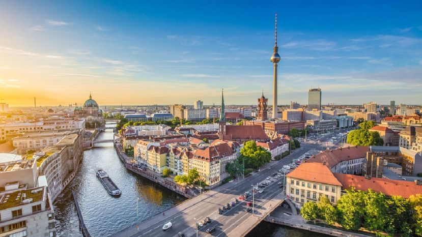

Berlin
There’s SO much to see and do in Berlin, and at times it feels so big (particularly with there not being just one centre).
As mentioned, the transport system is excellent, so you really can see a lot, even if you only have a short time.
Head to the Reichstag and Brandenburg Gate. If you apply in advance you can visit the beautiful dome of the Reichstag
(find out how here). The Monument To The Murdered Jews is so moving, and a walk through the towering columns is something
I’d urge anyone to experience as part of their trip.
Museum Island is another must-see and I also loved exploring the many courtyards of Hackesche Höfe.
Tucked away, this really is one of the city’s hidden gems! Close by is a street covered in murals and graffiti,
just next to the Anne Frank Museum.
To be honest, I love just how walkable Berlin is. If you’re on a budget,
I’d recommend taking yourself on a free walking tour of Berlin Mitte,
which allows you to check out the key sights in your own time.
As I was travelling solo, I was tempted to book onto a tour like this!
I’m not usually brave enough to go to bars or clubs late at night solo,
unless I know the lay of the land. On this tour you’ll find out where the locals drink,
and party with them! From goth bars to craft beer spots, you’ll explore Prenzlauer Berg, Kreuzberg, Friedrichshain,
Neukölln and Wedding, and feel like a true Berliner by the end!